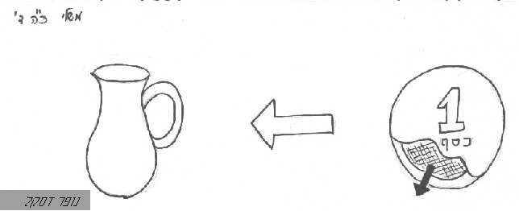

כספ
קוד: כספ בתנ"ך
סוג: שורש1
מאת:
אל:
- הגדרה_כללית: = ענינו תאוה וחמדה, ועמו שם "כסף". [שבי"ל]
- עצם: כסֶף (מתכת)
= שם קיבוצי למתכת ידוע, שהכל נכספים לו.
- פועל: כסַף (פעל)
- פועל: נכסף (נפעל)
- צילום:

- צילום:
- ציור: 
- הבדל: בדק הבית / יאיר מ', אראל -> פירושים וסימנים 11
- מאמר: הלואה בריבית - שכירות - עבדות / אראל (הגהה: עופר לביא, יעל)
- מאמר: חכמה, בינה ומתכות יקרות / -> סגלות משלי
- הבדל: כסף לא יכול לקנות אהבה / אראל
- מאמר: לחשוב לפני שמדברים - כדי שלא להגיד דברים רעים / אראל (הגהה: יעל) -> סגלות משלי
- הבדל: מצרף - לכסף, וכור - לזהב, ו- / אראל (הגהה: עופר לביא)
- הבדל: רכוש בספר בראשית / רחלי לאופר, מידד, אראל -> פירושים וסימנים 11
- מאמר: רק העניים, שלא נמשכו אחרי הכסף, יינצלו מהפורענות / אראל -> כפית ה'תשס"ב אלול
- ביטוי מתכת: כסף מזוקק
- תוכן1: להגיד דברי חכמה בצורה נעימה / אראל
- מאמר: עת אחרית הימים כאשר "הגוי לא נכסף" / רמי ניר
- תוכן1: צרפתיך ולא בכסף, בחרתיך בכור עוני / צחור -> אתר
- תוכן1: תבקשנה ככסף / אראל
- כסף = רצון, ואמצעי לביטוי כמותי שלו / אראל [נכתב ב-18:04:15 12.11.2011]
- כספך היה לסיגים, סבאך מהול במים / אראל [׳ ׳›׳×׳‘ ׳‘-07:06:14 15.11.2011]
{kind=link}